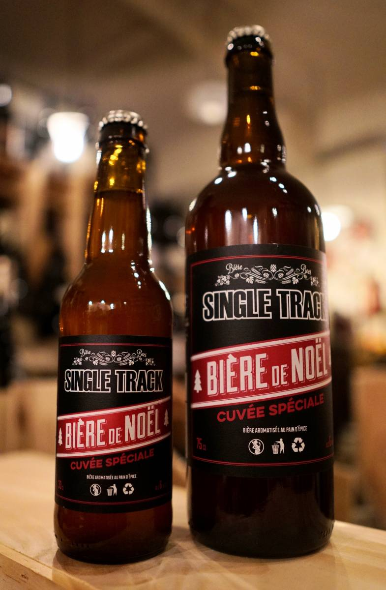

|
SINGLE TRACK BLONDE "POIVRE VIOLETTE" : D'UNE EXPÉRIENCE À UNE RÉFÉRENCE INCONTOURNABLE AU CERVIA
L'histoire :
Quand en 2011, nous étions en train de réfléchir à l'organisation des "1 an" de la Brasserie Single Track, l'idée a été de faire un événements ou les invités devaient retrouver les saveurs de la bière spécialement créée pour cet anniversaire.
|
 |
NOTRE TRADITIONNELLE BIÈRE DE NOËL EST DE RETOUR EN MAGASIN !
Elle est arrivée depuis quelques jours déjà au Cervia, c’est bien sûr notre traditionnelle bière de Noël !!
Il s’agit d’une base d’ambrée, aromatisée au pain d’épice et à l’écorce d’orange.
Une bière gourmande, idéale pour cette fin d’année, à déguster avec des apéritifs tout aussi gourmands du Comptoir du Cervia !
Nos bières Single Track sont brassées par la Brasserie du Faubourg à Vénissieux mais ce sont toujours nos recettes !!
|